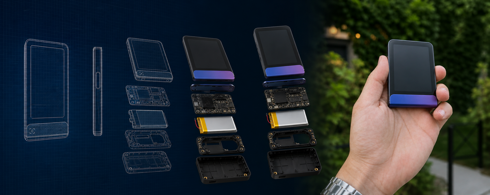
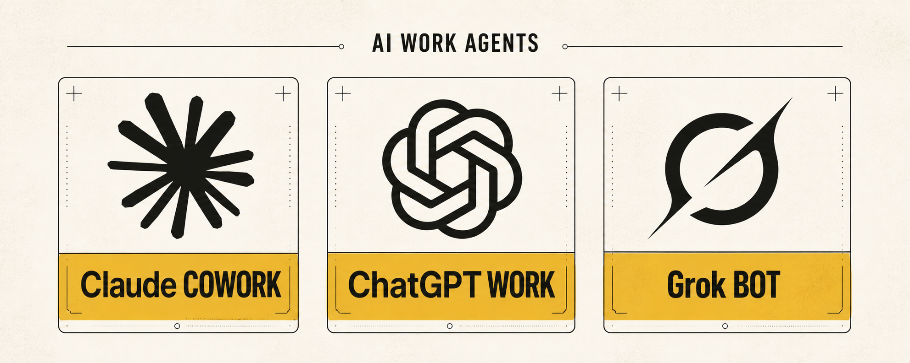
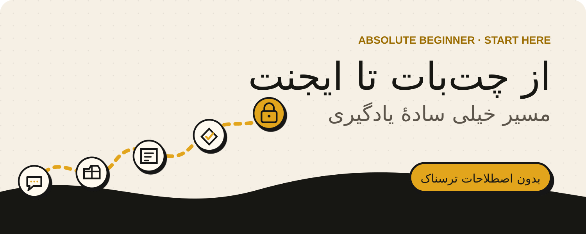
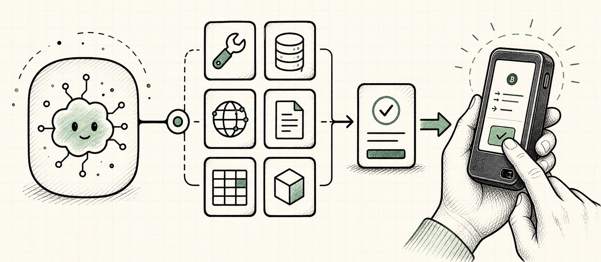
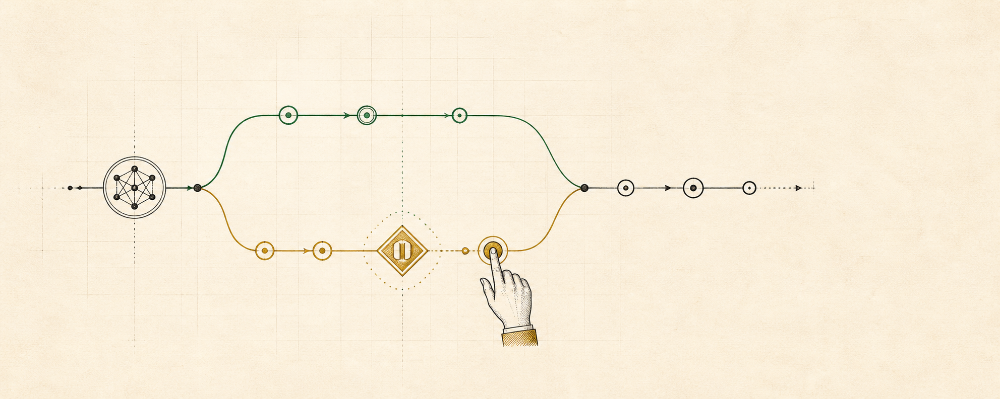
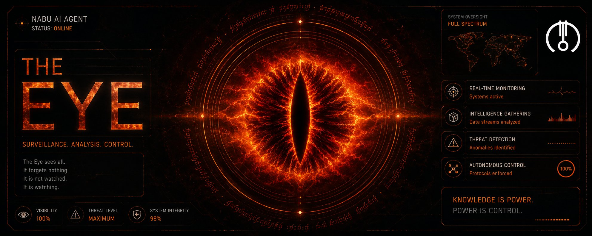
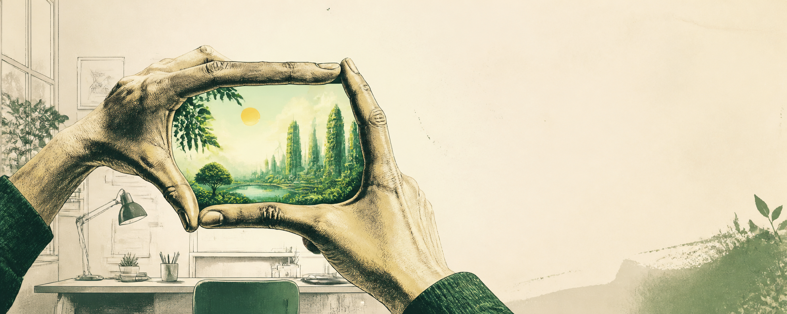

۹۰+ پرامپت تصویری برای عکس محصول
از نمای انفجاری و بلوپرینت تا پوستر تبلیغاتی و نقشهٔ امنیتی؛ پرامپتهای دستهبندیشده، ساده و آمادهٔ کپی.
I build in public across AI and blockchain—connecting ecosystems, communities and the people shaping them. The technologies are converging; what matters is who stays in control.
اینجا دربارهٔ آیندهای مینویسم که هوش مصنوعی، بلاکچین و آدمها کنار هم اکوسیستمهای جدیدی میسازن؛ کار من پیدا کردن نقطه اتصال فناوری، کامیونیتیها و آدمهاییه که مسیر این تغییر رو دارن شکل میدن.
Guides, experiments and build logs. Everything here is free.

از نمای انفجاری و بلوپرینت تا پوستر تبلیغاتی و نقشهٔ امنیتی؛ پرامپتهای دستهبندیشده، ساده و آمادهٔ کپی.
از ساخت Shortcut و فایل روزانه تا داشبورد، هشدارهای شخصی و مرز درست حریم خصوصی؛ بدون اپ واسط پولی یا سرور جدا.
Skill، اپ، CLI یا MCP؟ هر مورد دقیقاً چیه، چرا به کارت میاد و چه زمانی بهتره اصلاً نصبش نکنی.

سه محصول خیلی شبیه با همپوشانی بالا؛ بدون فرقتراشی، فقط امتیاز واقعاً خاص هرکدوم و یک روش درست برای انتخاب.

کل مسیر از چتبات و ابزار تا LangChain، LangGraph، تأیید آدم و مرز سخت؛ جوری که حتی مامانم هم بفهمه.

نصب مرحلهبهمرحله، مقایسه با Xiaomi Second Space و iCloud، و هشدار مهم قبل از Duress PIN.


مسیر کار رو بچین، وسطش سیو کن و فقط وقتی واقعاً لازمه آدم رو وارد تصمیم کن.


مدل دستها را نمیبیند؛ ردیابی محلی و ماسکگذاری، دنیای AI را فقط داخل قاب آشکار میکنند.
Everything used in a guide, in one place: the live tool, the walkthrough, source material and the companion video.
هر چیزی که در یک راهنما استفاده میکنیم، یکجا: ابزار لایو، آموزش، منبع و ویدیوی همراه.
با قاب دست، فقط بخش انتخابشده از ویدیو را به دنیای ساختهشده با AI تبدیل کن.
یک مدل ویدیویی generative و real-time است: تصویر دوربین را با تأخیر کم، حین حرکت، به یک دنیای تازه تبدیل میکند.
I’m Nabu, working on External Partnerships — Community & KOLs @ Ledger. This library is where I share the guides, experiments and field notes behind ecosystem building across AI, crypto, Web3 and cybersecurity.
The destination may be one connected world of intelligent systems and digital ownership. My thesis is simple: agents can propose, humans must supervise, and hardware should guarantee the final boundary.
من نابو هستم و در بخش همکاریهای خارجی، کامیونیتی و KOLها در Ledger فعالیت میکنم. اینجا تجربهها و آموختههای ساخت اکوسیستم را در فضای عمومی منتشر میکنم؛ با یک اصل ساده: ایجنتها پیشنهاد میدهند، انسانها نظارت میکنند و در نهایت سختافزار مرز کنترل را تضمین میکند.